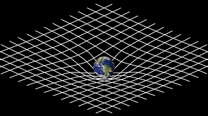

Kratka biografija
Albert Einstein rođen je 14. ožujka 1879. židovskim roditeljima.
Već od ranog djetinstva Einstein je počeo biti zainteresiran za znanost, ali i filozfiju.
U Švicarskoj je završio Tehničku visoku školu u Zürichu (ETH Zürich) 1900. godine
Od 1902.-1909. radio je u Bernu u patentnom uredu.
U tom je objavio nekliko revolucijonarnih znanstvenih radova.
U godini 1905., koja se zna nazivati Annus mirabilis (godina čuda), jer je tada objavio četiri znanstvena rada.
Njegova otkrića uključuju ekvivalentnost mase i energije, specijalnu teoriju relativnosti i opću teoriju relativnosti.
Bio je jedan od pinoira kvantne fizike, ali kasnije i jedan od njezinih protivinika.
Pobjegao je iz nacističke Njemačke kada ju je Hitler preuzeo, a kasnije se preselio u SAD i dobio američko državljanstvo.
Dobio je jednu Nobelovu nagradu i to za otkriće fotoelektričkog učinka.
Neki procjenjuju da je mogao dobiti i do 10 Nobelovih nagrada.
Specijalna teorija relativnosti
Specijalna relativnost je teorija koja je proizišla iz dvije pretpostavka: (1) zakoni fizike svuda su isti za sve promatrače u bilo kojem trenutku i točki u svemiru i (2) brzina svjetlosti je uvijek ista za sve promatrače.
Iz ta dva aksioma proizlazi mnogo egzotičnih realizacija.
Primjer je dilatacija vremena, odnosno činjenica da se vrijeme kreće različitim brzinama ovisno o brzini promatrača.
Sva njezina predviđanja više su puta bila dokazana.
Opća teorija relativnosti
Često nazvana kao jedna od najuspješnijih teorija fizike, uz Standardni model. Postoji više od 100 godina i još uvijek nije opovrgnuta. Njezina predviđanja bila su dokazana tisućama puta. Opća teorija relativnosti zapravo pokušava objasniti gravitaciju kao zakrivljenje prostor-vremena. Taj model gravitacije je nasuprotan kvantnoj fizici.
